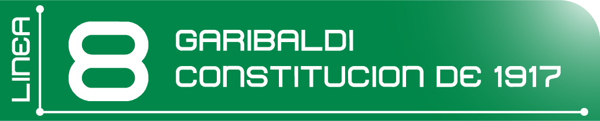

-

Línea 1 Pantitlan / Observatorio
Tiene una longitud de 18 Km 828 m (en servicio 16 Km 654 m y el resto se usa para maniobras). Se integra por 20 estaciones, 7 de ellas de correspondencia, 12 de paso y dos terminales; del total, 19 estaciones son subterráneas y una superficie.
Fuera de servicio
-
Línea 2 Cuatro Caminos / Tasqueña
Tiene una longitud de 23 Km 431 m (en servicio 20 Km 713 m y el resto se usa para maniobras). Se integra por 24 estaciones, 5 de ellas de correspondencia, 17 de paso y dos terminales; del total, 14 estaciones son subterráneas y 10 superficies.
Fuera de servicio
-

Línea 3 Indios Verdes / Universidad
Tiene una longitud de 23 Km 609 m (en servicio 21 Km 278 m y el resto se usa para maniobras). Se integra por 21 estaciones, 6 de ellas de correspondencia, 13 de paso y 2 terminales; del total, 17 estaciones son subterráneas y 4 superficies.
Fuera de servicio
-

Línea 4 Santa Anita / Martín Carrera
Tiene una longitud de 10 Km 747 m (en servicio 9 Km 363 m y el resto se usa para maniobras). Se integra por 10 estaciones, 6 de ellas de correspondencia -incluidas dos terminales-, y 4 de paso; 2 estaciones son superficies y 8 elevadas.
-

Línea 5 Politécnico / Pantitlan
Tiene una longitud de 15 Km 675 m (en servicio 14 Km 435 m y el resto se usa para maniobras). Se integra por 13 estaciones, 5 de ellas de correspondencia incluida una de sus terminales , 7 de paso y una terminal más; del total, 4 estaciones son subterráneas y 9 superficies.
Fuera de servicio
-

Línea 6 El Rosario / MArtín Carrera
Tiene una longitud de 13 Km 947 m (en servicio 11 Km 434 m y el resto se usa para maniobras). Se integra por 11 estaciones, 4 de ellas de correspondencia -incluidas las dos terminales-, 7 de paso; del total, 10 estaciones son subterráneas y una superficie.
-

Línea 7 El Rosario / Barranca del Muerto
Tiene una longitud de 18 Km 784 m (en servicio 17 Km 011 m y el resto se usa para maniobras). Se integra por 14 estaciones, 3 de ellas de correspondencia -incluida una de sus terminales-, 10 de paso y una terminal más; del total, 13 estaciones son subterráneas y una superficie.
Fuera de servicio
-

Línea 8 Garibaldi / Constitución de 1917
Tiene una longitud de 20 Km 078 m (en servicio 17 Km 679 m y el resto se usa para maniobras). Se integra por 19 estaciones, 5 de ellas de correspondencia -incluida una de sus terminales-, 13 de paso y una terminal más; del total, 14 estaciones son subterráneas y 5 superficiales.
Fuera de servicio
-

Línea 9 Pantitlan / Tacubaya
Tiene una longitud de 15 Km 375 m (en servicio 13 Km 033 m y el resto se usa para maniobras). Se integra por 12 estaciones, 5 de ellas de correspondencia -incluidas las dos terminales-, 7 de paso; del total, 8 estaciones son subterráneas y 4 elevadas.
Fuera de servicio

LOAD

ING...